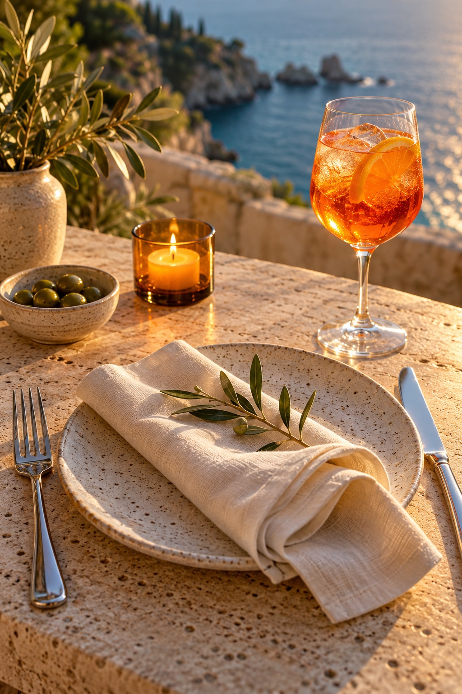
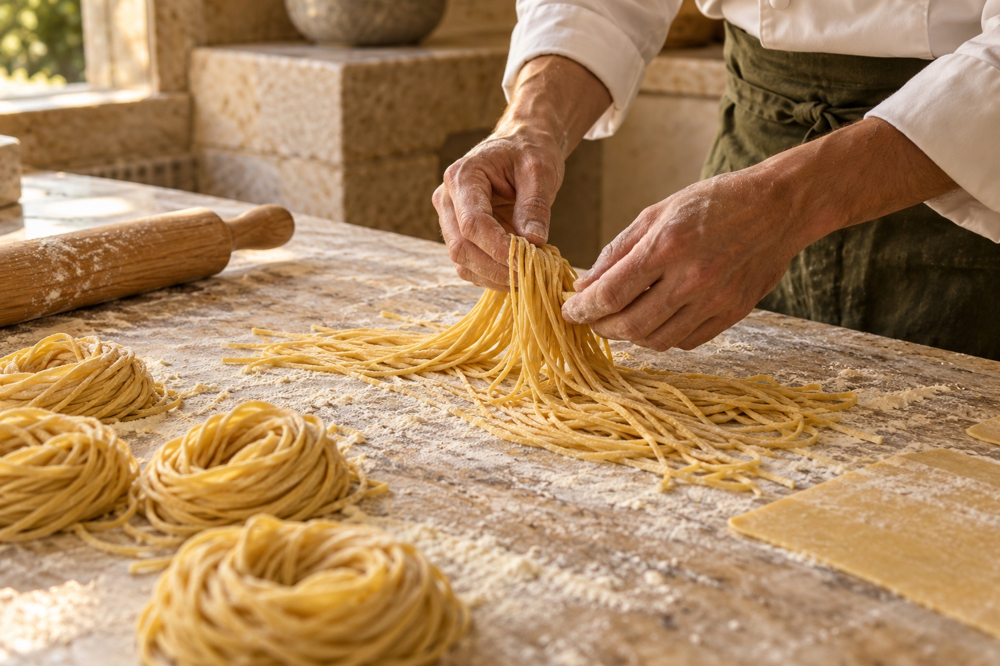
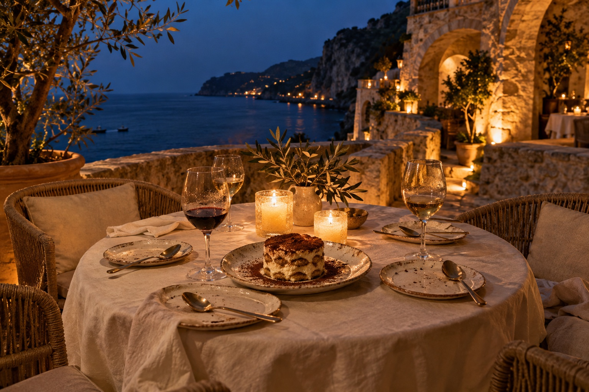

Начать с простого.
Первый лёд в бокале. Оливки, тёплый хлеб и знакомые голоса. Вечер уже начался.
Аперитив к встречеЕсть вечера, которым не нужен повод.
Только люди, которых хочется видеть.
В центре — хлеб, который разламывают руками. Буррата, которую передают соседу. Паста, которая собирает всех ближе.
Мы представляем MAREA именно так: длинный стол, мягкий свет и море, которое никуда не уходит.
Не расписание.
Три маленьких удовольствия.

Первый лёд в бокале. Оливки, тёплый хлеб и знакомые голоса. Вечер уже начался.
Аперитив к встрече
Паста ручной работы, рыба с огня и спелые томаты. Выбирать вместе, делиться без правил.
Собрать вкусы вечера
Десерт приходит с последними лучами. Разговоры становятся тише, а музыка — чуть ближе.
У вечера свой ритм